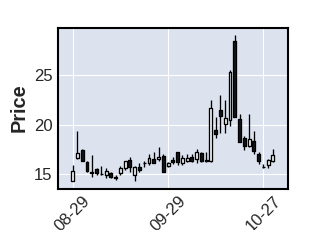
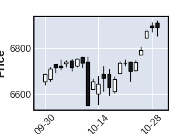
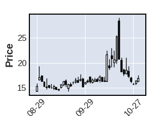
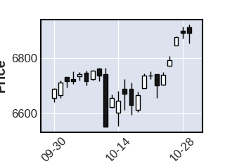
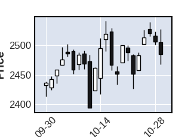
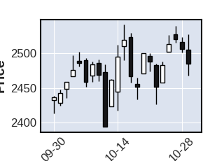
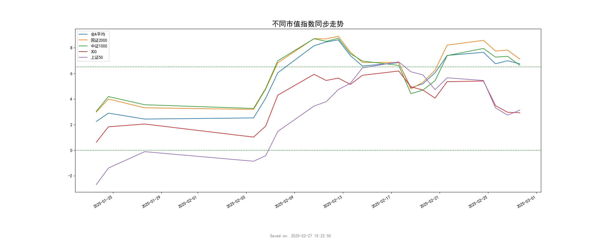

Market Data
 



 



A股资金/动量分析
↓A股权A等权与汇率变化、中美利差波动及融资余额变化的同步趋势。
The synchronized trends of A-share equity, exchange rate fluctuations, China-US interest rate differentials, and financing balance changes
The synchronized trends of A-share equity, exchange rate fluctuations, China-US interest rate differentials, and financing balance changes

↓融资余额变化与大市值股指（沪深300）和小市值股指（中证2000）的同步趋势。
The synchronized trends of financing balance changes with large-cap indices (CSI 300) and small-cap indices (CSI 2000)
The synchronized trends of financing balance changes with large-cap indices (CSI 300) and small-cap indices (CSI 2000)

Analysis of Momentum Trends for Different Market Cap Indices: All A Average, CSI 300, SSE 50, CSI 1000, CNX 2000.
全A平均、沪深300、上证50、中证1000、国证2000等不同市值指数动量走势分析。

全A平均、沪深300、上证50、中证1000、国证2000等不同市值指数动量走势分析。
Analysis of Momentum Trends for Different Investment Styles: Heavy Hong Kong Stocks, Heavy Fund Holdings, High Dividend, Recently Multi-Listed, Inactive.
“港股重仓、基金重仓、高股息、最近多板、不活跃等不同资金风格的指数动量走势分析。
“港股重仓、基金重仓、高股息、最近多板、不活跃等不同资金风格的指数动量走势分析。

Momentum Analysis of Market Indicators for Various Industry ETFs, Highlighting Outliers. Typically, the Highest Value is Selected.
各种行业ETF市场指标的动量分析，彩色部分表示游离于密集区的ETF种类。通常选择最高值进行分析。
各种行业ETF市场指标的动量分析，彩色部分表示游离于密集区的ETF种类。通常选择最高值进行分析。

Detailed Analysis of the Gray Areas (Concentrated Zones) in the Chart, with Colored Sections Highlighting the Top Gaining or Highest Potential Stocks that Could Break Through.
上图灰色部分（密集区）的细分分析，其中彩色表示涨幅较大或最高的品种，具备突破密集区的潜力。
上图灰色部分（密集区）的细分分析，其中彩色表示涨幅较大或最高的品种，具备突破密集区的潜力。